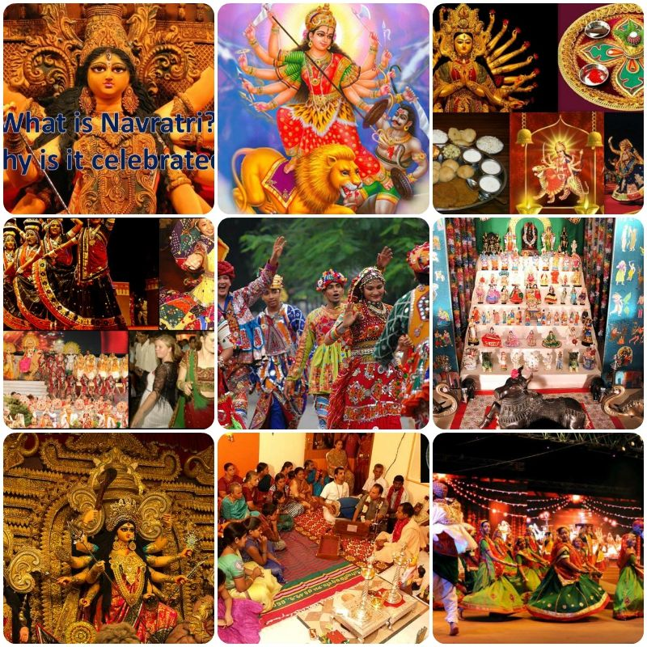

Festivals are vibrant and culturally significant events celebrated by communities around the world. They often mark important occasions, such as religious observances, seasonal changes, historical events, or social milestones. The meaning and significance of festivals can vary widely depending on cultural context, traditions, and community values, but several key themes consistently emerge.

Festivals are special events that celebrate cultural, religious, or seasonal traditions.
They often include music, dance, food, art, and various activities that bring people together.
Some well-known types of festivals include:
Cultural Festivals:
Celebrate the traditions and heritage of a particular community (e.g., Diwali, Chinese New Year).
Music Festivals:
Feature live performances by various artists (e.g., Coachella, Glastonbury).
Food Festivals:
Highlight specific cuisines or dishes (e.g., Oktoberfest, local food fairs).
Religious Festivals:
Mark significant events in various religions (e.g., Christmas, Ramadan).
Seasonal Festivals:
Celebrate changes in seasons (e.g., Harvest Festival, Spring Equinox).